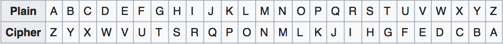

What is the Atbash cipher?
The Atbash cipher is a particular type of monoalphabetic cipher formed by taking the alphabet (or abjad, syllabary, etc.) and mapping it to its reverse, so that the first letter becomes the last letter, the second letter becomes the second to last letter, and so on. For example, the Latin alphabet would work like this:
Source: Wikipedia
|
Type your text input here:
This is your encoded message: |
Type the text to be decoded here:
This is your decoded message: |
|---|